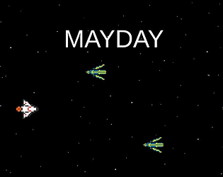

Life-long programmer passionate about games.
Here's an overview of my favorite projects.
Portfolio
I'll Be Fine
A tower defense game about keeping stressors away while putting on a brave face, although it might be best to sometimes take the mask off. I contributed to programming and game design. For development, I was responsible for programming tower buying/placing systems, behavior of several towers, enemy spawning, and transitions between gameplay scenes. For design, I most directly contributed the theme, tower upkeep mechanic, and difficulty progression systems.
See More
MAD: Mutually Assured Destruction
A top-down endless shooter where your weapons shoot other weapons. This game was made for the UChicago game jam over 3 days. From it, I learned a lot about planning development and effectively distributing work among a team.
See MoreMidway Frogger
A cozy re-implementation of Frogger where you play as a bunny attending UChicago crossing the Midway. Through this project I gained more experience collaborating with artists and developers that I was meeting for the first time.
See MoreMayday
A top-down bullet hell game where every shot you take brings your own ship closer to destruction. Although the game is short, I used this project as an opportunity to practice several software design patterns I had been interested in, such as state machines and event-driven programming.
See More
